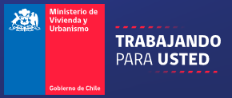

Serviu Magallanes
Somos un comité conformado por representantes de trabajadores y del empleador, comprometidos con la promoción de condiciones seguras y saludables en el entorno laboral en SERVIU Región de Magallanes y de la Antártica Chilena.
Consulta la gráfica oficial de la Dirección Meteorológica de Chile y conoce el índice observado actual:
Complete el siguiente formulario para reportar incidentes o condiciones inseguras. La información será revisada por el Comité Paritario de Higiene y Seguridad.
Comité Paritario - SERVIU Magallanes
Croacia 722, Punta Arenas, Magallanes y de la Antártica Chilena
Email: pvelasquezt@minvu.cl
Teléfono: +56 61 2714506